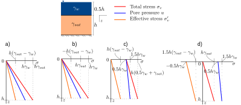

Recap
- We learned how to calculate the relative density of soils.
- We learned how to calculate optimum water contents and density after compaction.
- We learned how technical specifications and quality control of compaction are performed.
- We have accomplish objective 1.
Contents
- Suction and capillary action.
- Swelling/shrinkage in soils.
- Frost action in soils.
- Total stress, pore pressure, and effective stress.
Objectives covered in this lecture
- [O2]: Develop an understanding of the importance of groundwater and seepage and its role in evaluating the effective stress in soils
After this lecture we will able to:
- Calculate suction caused by capillary rise and approximate its height.
- Calculate the swelling and frost susceptibility of soils.
- Calculate pore pressure, total, and effective stresses.
Water in hydrostatic conditions

Capillary rise

- Surface tension will form a water meniscus.
- Inter-particle contact force increases.
- The meniscus radii is function of the shape and size of the pore space which is empirically relate as 20% of \(D_{10}\)
Capillary rise

Quiz 4.1
In which of the soils below will the capillary rise be greater?
- A loose poorly graded gravel
- A loose well graded gravel
- A dense well graded gravel
- A dense poorly graded gravel
Example 4.1
Suction pressure
Negative pore water pressure
\(r_m=\) radius of water meniscus

Quiz 4.2
Select the zone of in the beach profile with excellent bearing capacity
Example 4.2
Calculate the capillarity water pressure for the same soils of Example 4.1.
Go to Jupyter NotebooksCapillarity explains shrinkage
- Recall that the menisci radii and pressure are related as \(u_c \ \alpha \ 1/r\).
- Thus, reducing the water content should make the space between particles shrink and \(r_m\) decrease.
- Menisci tension and wall rigidity balance. No further shrinkage of pore space occurs.
Swelling potential
Swelling can be measured as a potential for volume expansion or as the stress re quired to prevent the expansion.
Swelling potential
swelling and activity relationship
Quiz 4.3
For the data of example 2.7 (\(C_F=5.5\%\) and \(A=1.81\)) what is its estimated swelling potential.
- \(S_P<1.5\%\) Low
- \(1.5 \leq S_P<5\%\) Medium
- \(5 \leq S_P<25\%\) High
- \(S_P \geq 25\%\) Very high
Frost action
Three ingredients are needed for frost action action to occur:
- Temperatures below freezing.
- High water table.
- Frost susceptible soils.
Frost action
Frost susceptible soils

| Group | Frost susceptibility | Soils |
| I | None | Gravel, sand, gravelly tills |
| II | Moderate | Fine clay ( \(C_F>40\%\)) |
| III | Strong | Silt, coarse clay (\(C_F\) 15-25%), silty tills |
Frost penetration depth

Example 4.3
Principle of effective stress
According to the Principle of effective stresses the stress that produces the deformation of the soil skeleton is transmitted through the particle contacts and is equal to the total stress \(\sigma\) minus the water pore pressure \(u\).
In (1925) Karl Terzaghi proposed a new concept that profoundly impacted the field of Geotechnics: The principle of effective stresses.

Principle of effective stress

In-situ vertical stresses
Multilayer profiles

The total vertical stress at depth \(z\) is:
\(n=\) number of interfaces below the ground surface including the water table.
Example 4.4
Compute the total and effective stress at point A. Plot the vertical total and effective stresses with the pore pressure profile in the same graph.
Go to Jupyter NotebooksQuiz 4.4
For the soil profile shown below, which stress profile plot is correct?
Horizontal stresses
Horizontal stresses
\(K_0\) only applies for horizontal surface conditions and only to effective stresses

Example 4.5
Compute the total and effective horizontal stress at point A. Plot the vertical and horizontal total and effective stresses with the pore pressure profile in the same graph.
Go to Jupyter NotebooksQuiz 4.5
What is the effect of lowering the ground water table on the effective vertical stresses?
- It is similar to loading the soil
- It is similar to unloading the soil
- It doesn't affect the soil